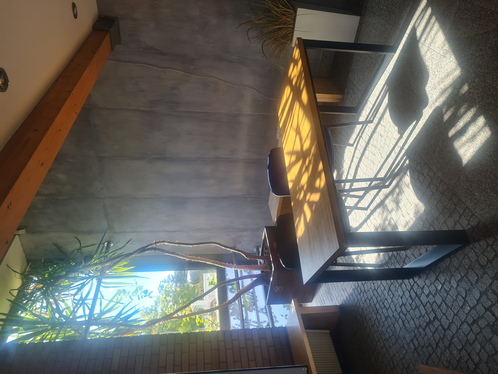

Jest tu kto?
To zdjęcie powstało już podczas studiów. Jest ilustracją mojego zawodu, że nie rozdają już legitymacji. Z drugiej strony zyskałam dzięki temu bardzo klimatyczzny kadr. Czy wspominałam już, że praktycznie wszyskie moje zdjęcia robię telefonem? To chyba normalne w tych czasach, ale dla mnie mimo wszystko trochę dziwne. Tak samo jak to, że stanowisko rozdające legitymacje jest tak krótko otwarte.
